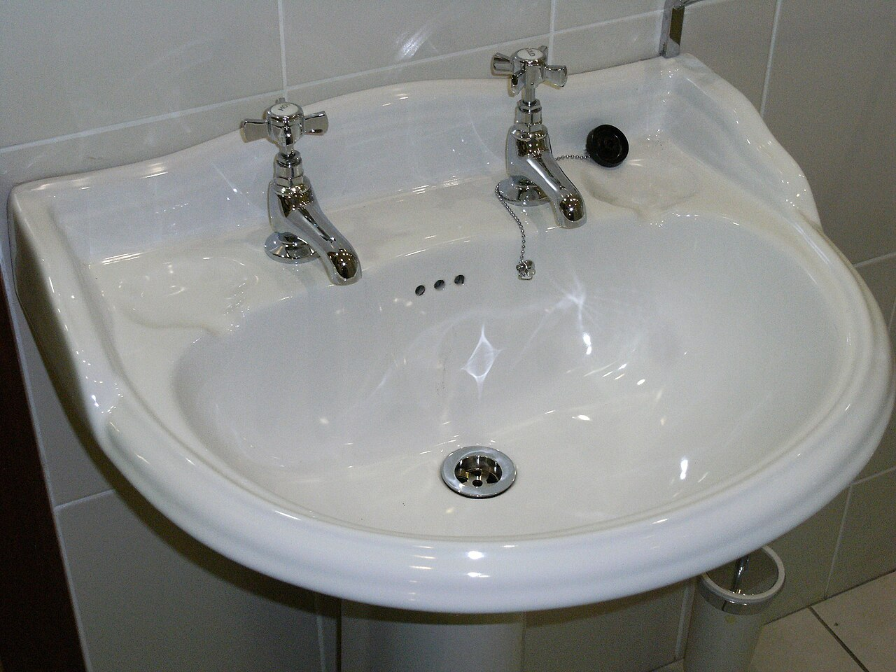

Gương nhà tắm bị mờ hơi nước: 4 cách lau sạch, giữ lâu mờ

Gương nhà tắm bị mờ hơi nước: 4 cách lau sạch, giữ lâu mờ: gương nhà tắm bị mờ hơi nước là do hơi nước nóng gặp mặt gương lạnh hơn rồi đọng thành giọt li ti trên mặt gương. 4 cách sau xử lý từ gốc tới ngọn: lau sạch hơi nước ngay sau khi tắm, lau bằng nước rửa chén pha loãng, phủ một lớp chống mờ mỏng, và giảm hơi nước trong phòng tắm.
Vừa tắm xong, đứng trước gương định cạo râu hay sấy tóc thì gương mờ trắng, soi không thấy gì — lau bằng tay thì chỉ sạch một vệt, một lúc sau lại mờ. Hơi nước bám gương không phải do gương bẩn, mà do phòng tắm nóng ẩm gặp mặt gương lạnh. 4 cách sau làm gương sáng lại ngay và giữ gương lâu mờ hơn.
Cảnh báo an toàn trước khi làm gì
Không pha chung thuốc tẩy với giấm hay nước lau kính có tính axit — hai thứ này gặp nhau sinh khí độc, hít phải rất nguy hiểm. Xịt dung dịch lau lên khăn rồi mới lau gương, không xịt thẳng lên gương gần ổ cắm hay đèn. Hóa chất lau kính để xa tầm tay trẻ em, dùng xong đậy nắp và cất lên cao. Gương bị nứt hay sứt mẻ thì thay gương mới, không cố lau mạnh — gương nứt có thể vỡ khi lau. Không dội nước sôi lên gương lạnh — gương thay đổi nhiệt độ đột ngột có thể nứt.
1. Lau sạch hơi nước ngay sau khi tắm
Hơi nước mờ gương chỉ là nước đọng trên mặt gương — lau khô là gương sáng lại ngay, không cần hóa chất. Dùng khăn microfiber hay khăn cotton mềm, lau một chiều từ trên xuống dưới, lau hết mặt gương rồi giặt khăn phơi khô. Lau ngay sau khi tắm xong, lúc hơi nước chưa khô thành vệt: lau lúc gương còn ướt thì sạch nhanh, để khô tự nhiên thì cặn khoáng trong nước sẽ để lại vệt mờ. Gương lau khô rồi thì soi rõ ngay — cách này chỉ xử lý hơi nước của lần tắm vừa xong, muốn gương lâu mờ thì làm thêm cách 3 và 4.
2. Lau bằng nước rửa chén pha loãng cho gương thật sạch
Gương dùng lâu ngày thường có một lớp màng mỏng do cặn xà phòng, kem đánh răng bắn lên và hơi nước — lớp màng này làm hơi nước bám chặt hơn, lau nước thường không sạch. Pha một giọt nước rửa chén vào một chén nước ấm, nhúng khăn mềm vắt ráo rồi lau khắp mặt gương — nước rửa chén làm sạch lớp màng dầu và cặn bám mà không làm xước gương. Lau xong thì lau lại bằng khăn ẩm sạch để lấy hết bọt xà phòng, rồi lau khô bằng khăn microfiber khô. Vết cặn trắng cứng đầu thì pha giấm trắng với nước theo tỉ lệ 1 phần giấm, 3 phần nước, thấm khăn lau lên vết cặn, để 2–3 phút rồi lau sạch — giấm hòa tan cặn vôi. Không dùng búi sắt, bột tẩy hay khăn ráp để chà gương — mặt gương xước thì soi mờ vĩnh viễn.
3. Phủ một lớp chống mờ mỏng để gương lâu mờ
Muốn gương sau khi tắm không mờ ngay thì phủ lên mặt gương một lớp mỏng chống bám hơi nước. Cách đơn giản nhất: bôi một lớp kem cạo râu mỏng lên mặt gương khô, xoa đều rồi lau sạch bằng khăn khô — lớp màng mỏng còn lại làm hơi nước khó bám, gương giữ được độ trong sau vài lần tắm. Cách khác là pha nước rửa chén với nước theo tỉ lệ 1 phần nước rửa chén, 10 phần nước, thấm khăn lau một lớp mỏng lên gương rồi để khô tự nhiên, không lau lại — lớp màng này cũng chống mờ được vài ngày. Lớp chống mờ nào cũng cần làm lại sau vài lần tắm. Cách này chỉ chống hơi nước bám — gương đã ố vàng hay có đốm đen ở viền thì lớp chống mờ không xử lý được.
4. Giảm hơi nước trong phòng tắm
Lượng hơi nước trong phòng tắm quyết định gương mờ nhanh hay chậm: hơi nước ít thì gương lâu mờ, hơi nước nhiều thì gương mờ ngay sau khi tắm. Bật quạt hút mùi trong lúc tắm và để chạy thêm 15–20 phút sau khi tắm xong — quạt hút hơi ẩm ra ngoài, phòng khô nhanh, gương cũng khô theo. Nhà tắm có cửa sổ thì mở hé cửa sổ lúc tắm và sau khi tắm; không có cửa sổ thì mở hé cửa phòng tắm sau khi tắm xong để hơi ẩm thoát ra. Tắm bằng nước ấm vừa, không cần nước quá nóng — nước nóng tạo nhiều hơi nước hơn. Phòng tắm thông thoáng thì không chỉ gương lâu mờ mà tường cũng ít mốc hơn.

Giới hạn cần nhớ
Lớp chống mờ và lau chùi chỉ xử lý hơi nước bám trên mặt gương — gương đã ố vàng, có đốm đen ở viền hay mặt sau bị bong lớp tráng thì lau không sạch được, vì đó là gương đã hỏng lớp phản xạ, chỉ có thay gương mới. Gương trong phòng tắm không có quạt hút hay cửa thông gió thì hơi nước tích lại nhiều, lớp chống mờ cũng chỉ giữ được ngắn. Cặn vôi bám trên kính tắm là chuyện khác với hơi nước bám gương: cặn vôi là vết cứng do nước khô để lại, xử lý theo bài riêng Cách tẩy cặn canxi trên kính tắm sáng bóng như mới với 3 cách đơn giản.
Kết lại: lần tới tắm xong thấy gương mờ, cứ nhớ 4 cách: lau khô ngay sau khi tắm, lau sạch bằng nước rửa chén pha loãng, phủ một lớp chống mờ mỏng, và bật quạt hút để phòng khô nhanh — gương sáng, soi rõ.
- Muốn bài viết có thêm người hỏi mua? Xem các gói tăng tương tác tại viettuongtac.com.
- Cần một website bán hàng để khách xem mẫu và đặt hàng dễ hơn? Xem mẫu tại webkhoinguon.com.


💬 Bình luận
Đang tải bình luận…